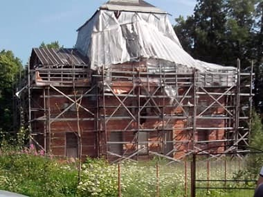
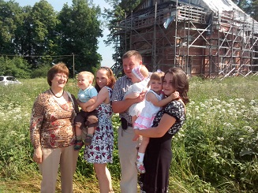
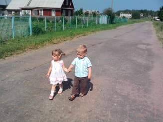

Церковь в Волгово не просто исторический памятник возведенный в 1812 году, ее можно рассматривать как символ огромного края - Ингерманландии. Если верить, что историческая область получила название от принцессы Ингегарды, которая в русской транскрипции превратилась в Ирину, то её (Землю) можно назвать - Землей Ирины.
Какие мотивы были у людей заложить храм в честь именно этой святой не узнать, но одно то, что церковь появилась в этом крае, наводит на мысль о непростом совпадении.
В наше время применительно к Ленинградской области с Санкт-Петербургом все чаще можно встретить название Ингрия. Использование такого топонима дает емкое представление о географическом охвате, исторических судьбах, культурных традициях, этническом составе и религиозной принадлежности народов здесь проживающих.
Это единственный храм прихожане которого православные. И русские и финны.
На сегодня, храм действующий. Восстанавливается, но внешних изменений за последний десяток лет не наблюдается. Состояние церкви святой Ирины наглядно отображает состояние Земли, носящей это имя: - восстанавливается.
Службы ведутся. Детишек крестят.

